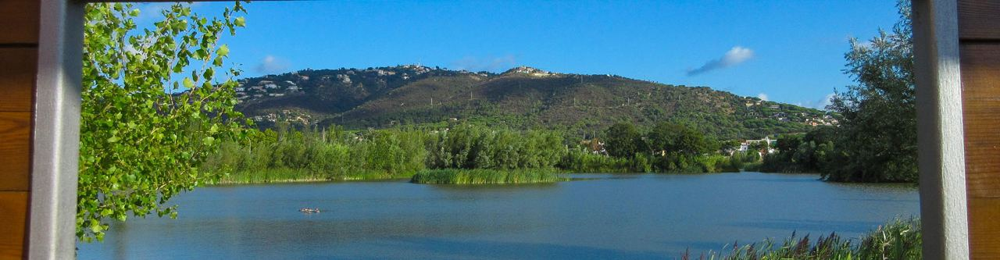

Ruta · Platja d'Aro
En aquest itinerari que ens descobreix el curs baix del Ridaura visitarem les zones humides de la seva desembocadura, el parc dels Estanys i la bassa del Dofí. Aquests espais configuren un…